Software developer, product builder, media leader, and founder. I've shipped a published iOS app, architected production databases, led a creative team, and run my own e-commerce brand, all in the last three years.
A consumer mobile app I built solo from concept to a live public release, using FlutterFlow with a Supabase (PostgreSQL) backend. I designed the data model, built the barcode scan and score logic, and shaped every screen a user touches.
Full technical ownership of the build: schema design, authentication, role-based access, and the front-end experience, then shipped to the public App Store, working independently from first concept through to release.
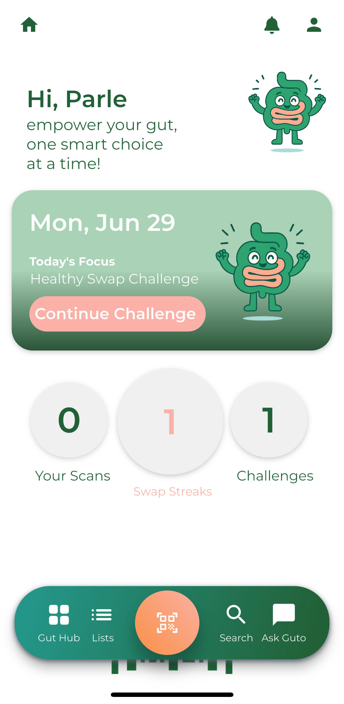
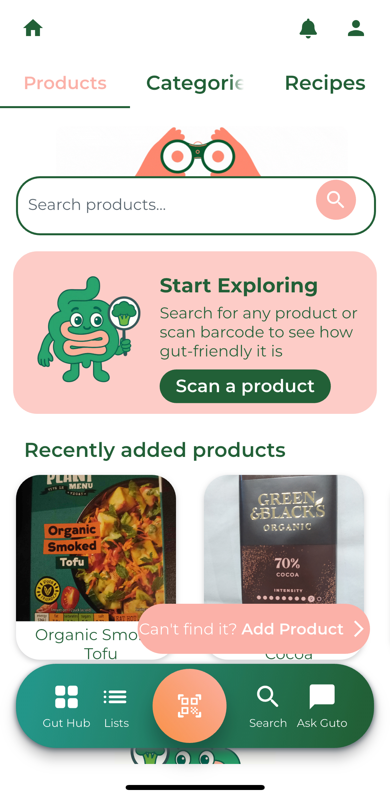
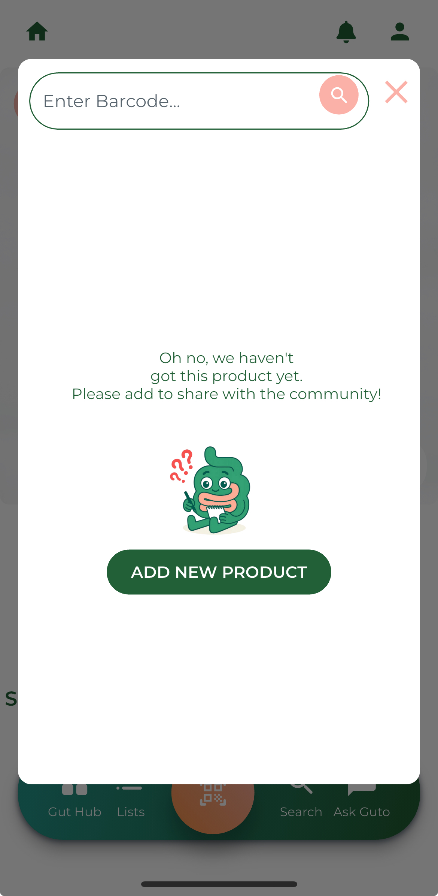
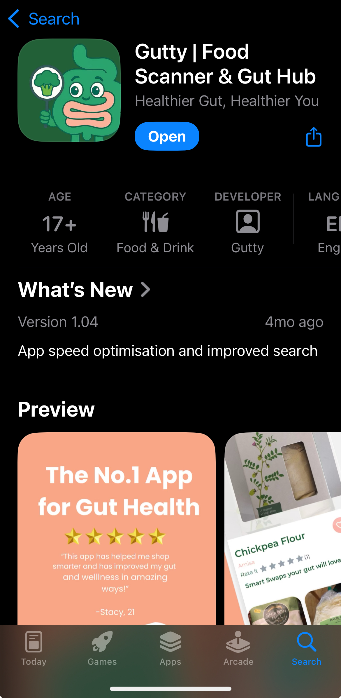
I built the data platform behind a production members-only application as part of the development team, designing PostgreSQL schemas in Supabase, writing SQL views and indexes for authentication, content delivery, and role-based access, and implementing Row Level Security to keep sensitive data protected without slowing anyone down.
Optimised queries and access patterns to cut application load times by 30%, and work directly with stakeholders to evolve the data model as the product grows.
Built a responsive staff dashboard using React (Vite), Tailwind CSS, and Lucide icons, structured into modular components ready for real API integration, with accessibility and performance as first-class concerns rather than afterthoughts.
View the code on GitHub ↗I lead the team behind all digital content and social media for a multi-platform organisation reviewing every reel and video before it goes out, writing captions, and setting content strategy across Instagram, TikTok, and Facebook. Beyond content, I coordinate logistics and communications for weekly services and events, managing follow-ups across teams against fixed weekly deadlines.
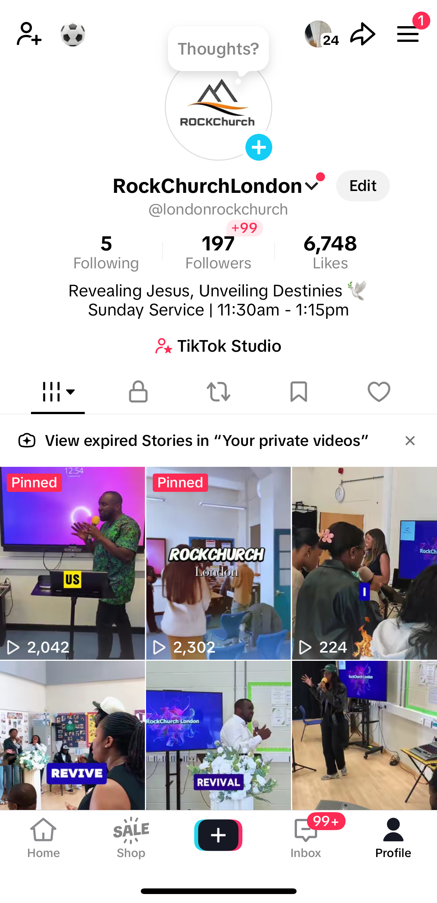
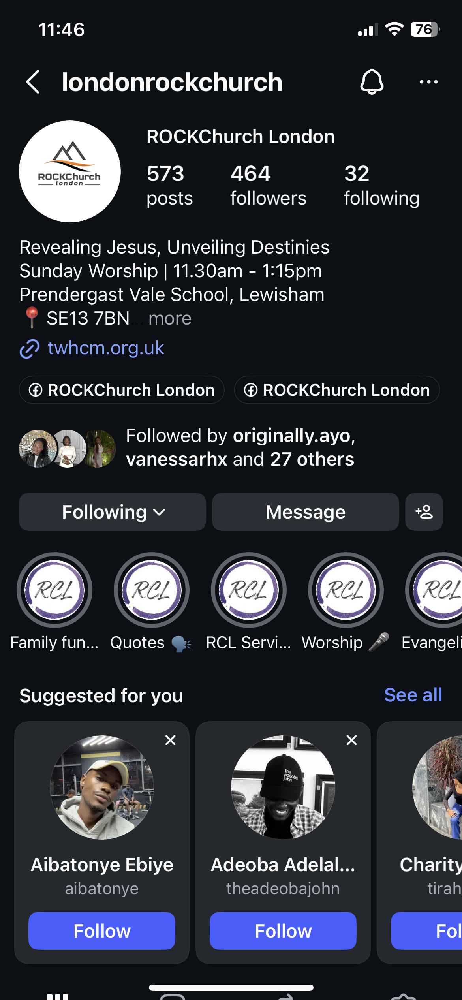
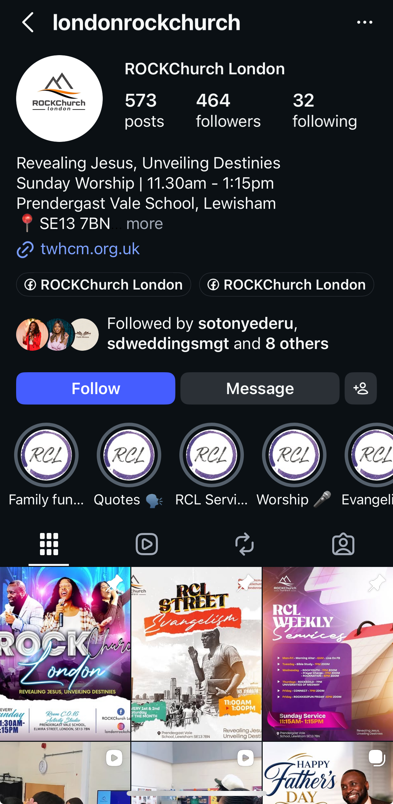
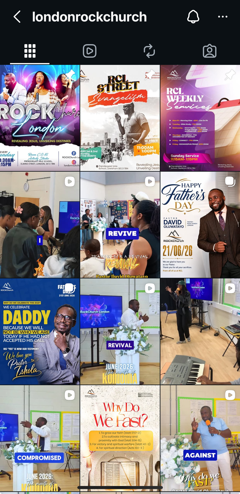
An independent illustration brand I founded and run alone, with faith-inspired prints and stickers, sold through my own Shopify store and Etsy. I handle everything: brand identity, original illustration in Procreate, product design, customer relations, order fulfilment, and marketing.
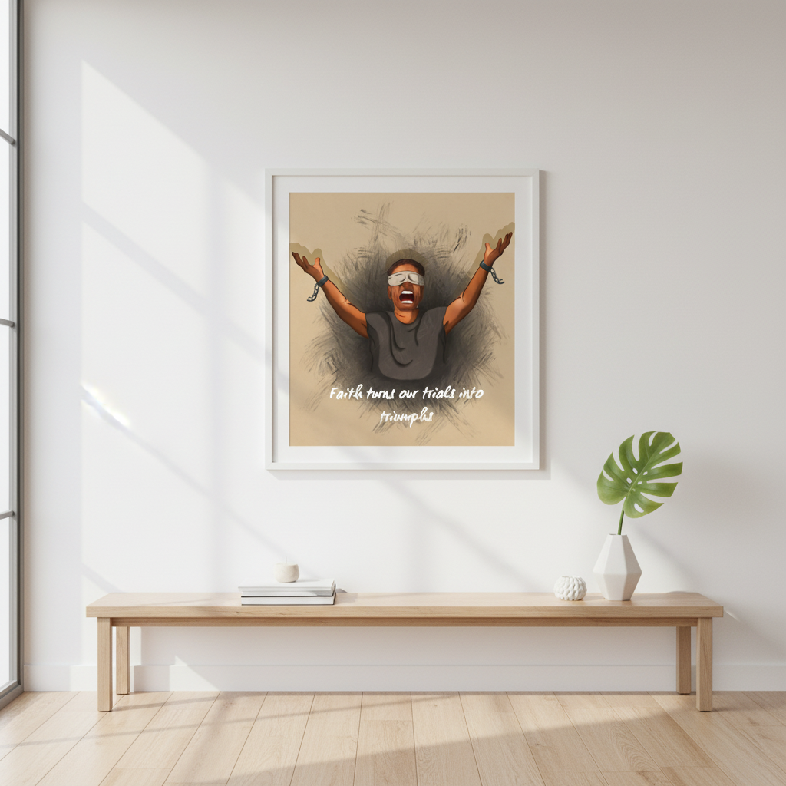
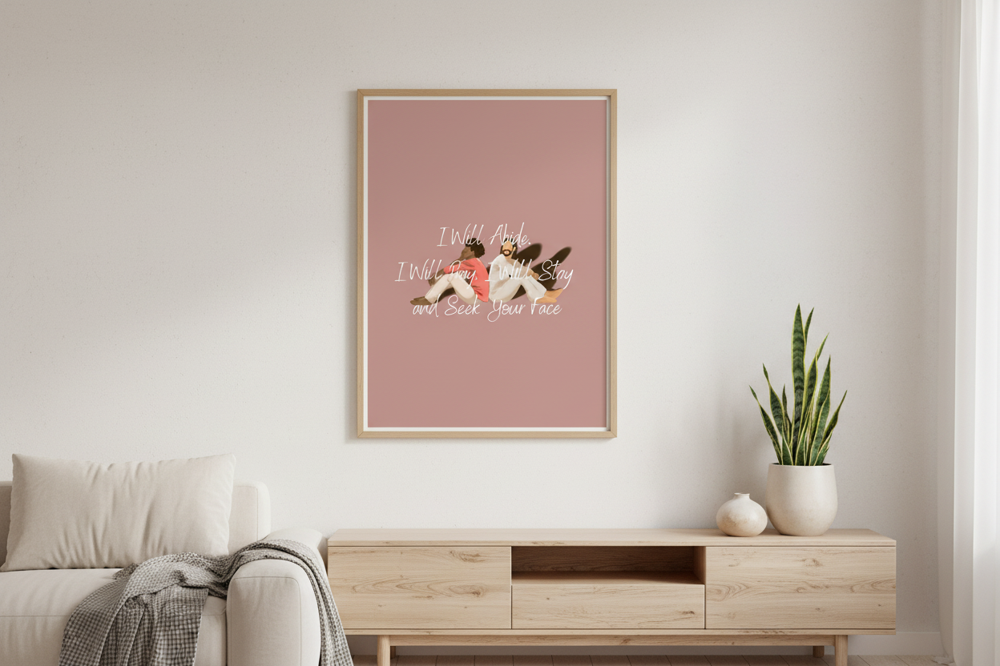
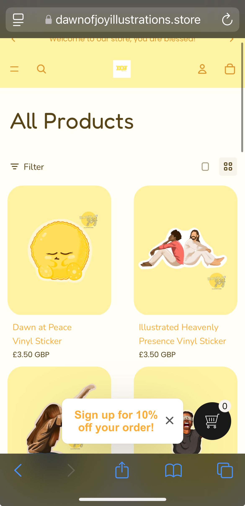
Key modules: Programming for AI · Cloud Computing · Human–Computer Interaction (UX/UI) · Solving Problems with Data
Final project: Designed a research website with structured pages and validated data workflows.
Leadership: Vice-President, Rock Solid Campus Society. Grew membership 30% and led events for 20+ attendees. Student Representative, University of Kent.